[GA]Sheik
Główny opiekun projektu i osoba odpowiedzialna za ogólny kierunek serwera. Czuwa nad najważniejszymi decyzjami, rozwojem projektu i spójnością całej wizji Monastyr2.
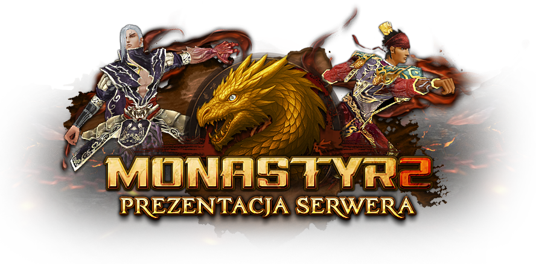
Monastyr2 to klasyczny serwer w formie medium/hard, oparty na dobrze znanej formule gry. Naszym celem jest zachowanie klimatu starego Metina, jednocześnie rozwijając serwer o rozwiązania, które odpowiadają współczesnym oczekiwaniom graczy.
Jednym z fundamentów projektu jest bliski kontakt ze społecznością. To gracze tworzą serwer i nadają mu charakter, dlatego Monastyr2 rozwijany jest razem z nimi - w oparciu o to, co faktycznie dzieje się w grze i czego gracze naprawdę oczekują.
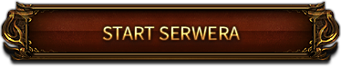
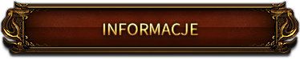
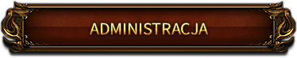
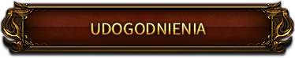
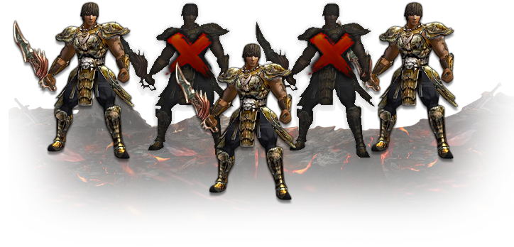
Od teraz możecie korzystać maksymalnie z 2 kont do aktywności PvE.
Pod tym pojęciem rozumiemy:
Konta powyżej tego limitu nie będą mogły wykonywać tych czynności, ale nadal mogą służyć do buffowania, handlu i PvP — te obszary pozostają w pełni dostępne. Blokada tyczy się tylko wyżej wymienionych aktywności PvE. Dodatkowo - nie mamy zamiaru ograniczać liczby otwartych klientów - pozostanie to nieograniczone.
Poniżej znajduje się interaktywny podgląd panelu bocznego. Najedź na przyciski oraz elementy ekwipunku, aby zobaczyć przypisane do nich informacje.
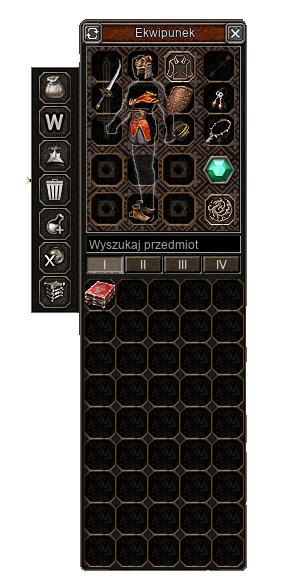
Poniżej znajduje się podgląd panelu prosto z rozgrywki.
Najedź na wybrane przyciski, aby zobaczyć opis funkcji.
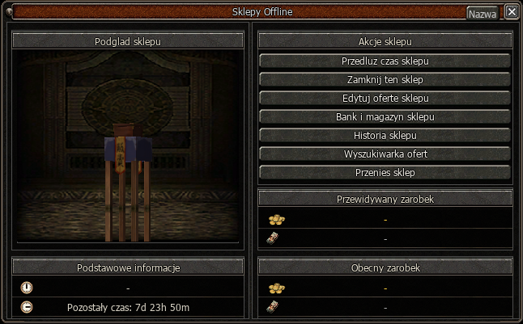
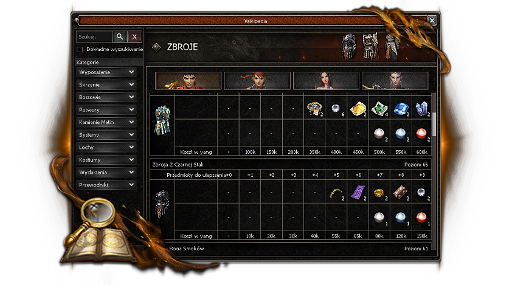
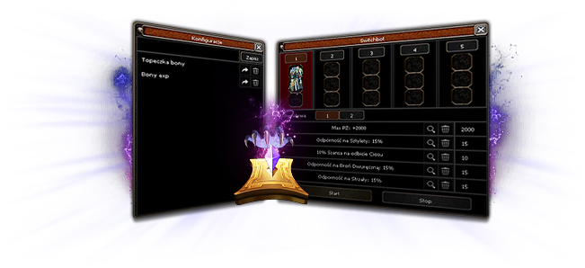
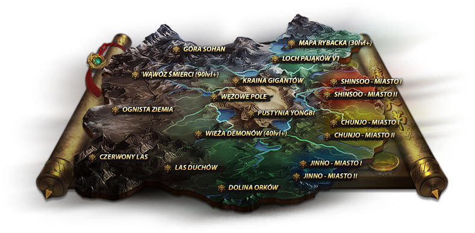
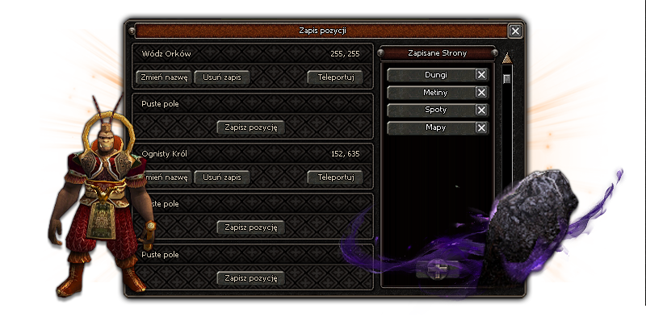
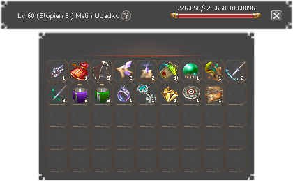
Poniżej znajdziesz listę udogodnień poprawiających komfort gry. Kliknij znak zapytania obok wybranej funkcji, aby zobaczyć jej podgląd.
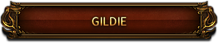
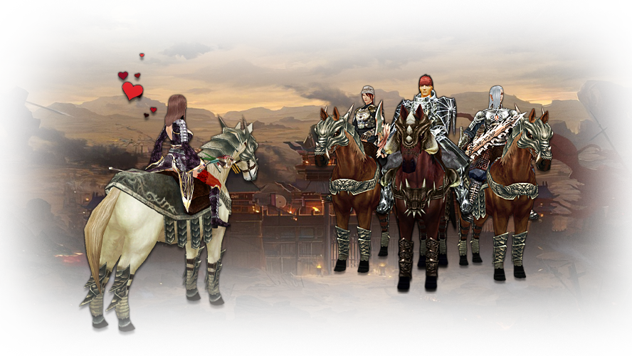
System Gildii na naszym serwerze pozwoli wzmacniać postacie poprzez dodatkowe bonusy.
Rozwój gildii nie będzie jednak łatwy – wymagać będzie zaangażowania wszystkich jej członków.
Awans gildii wymaga eliksirów gildii.
Możemy je zdobyć z legend, bossów mapowych, eventów oraz z małą szansą z dungeonów.
Dostępny jest także crafting.
Wymagane materiały
 5
5
 5
5
 5
5
 10
10
 15
15
 1kk
1kk
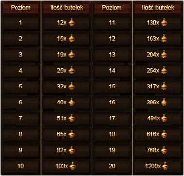
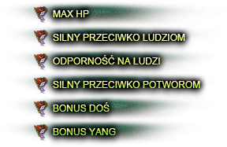
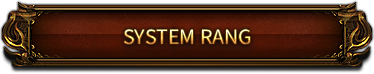
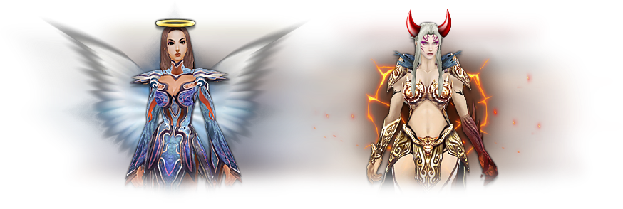
Zmodyfikowaliśmy system rang dzieląc go na pozytywne i negatywne.
W ten sposób chcemy zachęcić graczy do wyboru poszczególnych aktywności
| Przedział | Nazwa | Bonusy |
|---|---|---|
| -1 do -10 000 | Agresywny | Silny przeciwko ludziom +2% |
| -10 001 do -25 000 | Nieuczciwy | Silny przeciwko ludziom +4% |
| -25 001 do -45 000 | Złośliwy | Silny przeciwko ludziom +8% |
| -45 001 do -99 999 | Okrutny | Silny przeciwko ludziom +13% |
| -100 000 | Krwawy |
Silny przeciwko ludziom +18% Maks. PŻ +1500 Szansa na cios krytyczny 10% Szybkość zaklęć +10% |
| Przedział | Nazwa | Bonusy |
|---|---|---|
| +1 do +10 000 | Przyjazny | Silny przeciwko potworom +1% |
| +10 001 do +25 000 | Dobry | Silny przeciwko potworom +3% |
| +25 001 do +45 000 | Szlachetny | Silny przeciwko potworom +6% |
| +45 001 do +99 999 | Rycerski | Silny przeciwko potworom +10% |
| +100 000 | Władca |
Silny przeciwko potworom +15% Szansa na przeszywający cios 10% Szansa na bonus DOŚ +15% Podwójny drop yang +15% |
Punkty dodatnie otrzymujemy używając:

Zwiększa Punkty Rangi o 100 punktów.
(Czas regeneracji: brak)

Zwiększa Punkty Rangi o 250 punktów.
(Czas regeneracji: brak)
Zwiększa Punkty Rangi o 100 punktów.
(Czas regeneracji: brak)
Pozyskasz ją z dungeonów.
Zwiększa Punkty Rangi o 250 punktów.
(Czas regeneracji: brak)
Pozyskasz go z bossów mapowych.
Punkty ujemne otrzymujemy używając:
Materiał
Zwiększa Punkty Rangi o 100 punktów.
(Czas regeneracji: brak)
Efekt craftingu
Crafting wymaga Fasolki Zen oraz 100.000 Yang.
Szansa na crafting: 100%
Materiał
Zwiększa Punkty Rangi o 250 punktów.
(Czas regeneracji: brak)
Efekt craftingu
Crafting wymaga Owocu Życia oraz 250.000 Yang.
Szansa na crafting: 100%
Wytwarzanie jest dostępne u Uriela.
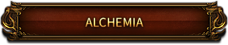
Alchemia to jeden z głównych systemów progresji. Wymaga czasu, zaangażowania i sporych ilości yang, ale oferuje potężne bonusy. Wyborna alchemia będzie trudna do zrobienia – i wartościowa.
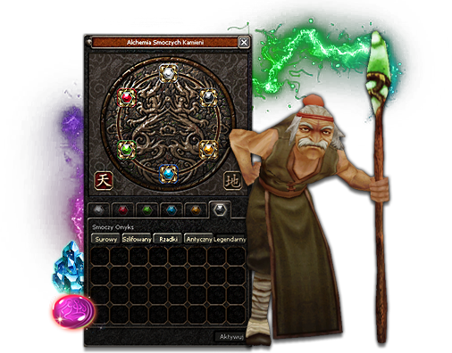
Uszlachetnianie Smoczych Kamieni odbywa się u Alchemika.
Maksymalna klasa kamieni to: Legendarny
Maksymalna klasa jakości to: Wyborny.
 Cor Draconis (surowy)
Cor Draconis (surowy)
 Cor Draconis (rzadki)
Cor Draconis (rzadki)
 Cor Draconis (szlifowany)
Cor Draconis (szlifowany)
 Zielona Smocza Fasola
Zielona Smocza Fasola
 Różowa Smocza Fasola (+10%)
Różowa Smocza Fasola (+10%)


Dodaliśmy premię +10% do bonusów alchemii, jeśli w kole znajdują się
wszystkie Smocze Kamienie na poziomie Wyborny +6.
Premia działa wyłącznie wtedy, gdy każdy kamień ma wyborną jakość.
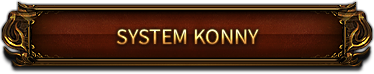
Jeździectwo zostało u nas rozwinięte do 40 poziomu.
Klasyczne misje konne zostały usunięte
Poziom Jeździectwa rozwijamy klikając PPM na przedmioty.
| Poziom | Przedmiot | Czas | Szansa | Szansa z Radą | Egzo |
|---|---|---|---|---|---|
0–21 |
|
24 godziny |
40% |
Nie działa |
Tak |
22–40 |
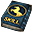 Rada Konna |
Brak limitu czasu |
40% |
Nie działa |
Brak limitu czasu |
Poniżej prezentujemy dokładny crafting Rady Konnej
| Przedmiot | Nazwa | Ilość |
|---|---|---|
 |
Medal Konny | 10 |
|
Zwój Błogosławieństwa | 5 |
|
Zwój Egzorcyzmu | 5 |
|
Rada Pustelnika | 5 |
|
Kamień Duchowy | 5 |
Koszt wytworzenia: 500 000 Yang
Szansa na pomyślne wytworzenie: 75%
Poniżej prezentujemy dokładny crafting Cukru dla Konia 
| Przedmiot | Nazwa | Ilość |
|---|---|---|
|
Medal Konny | 10 |
|
Zwój Błogosławieństwa | 2 |
|
Zwój Egzorcyzmu | 2 |
|
Rada Pustelnika | 2 |
|
Kamień Duchowy | 2 |
Koszt wytworzenia: 2 000 000 Yang
Szansa na pomyślne wytworzenie: 100%
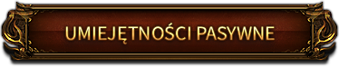
Na naszym serwerze dodaliśmy 3 umiejętności pasywne Dominacja, Potworologia, Metinologia. Maksymalny poziom umiejętności pasywnych: P.
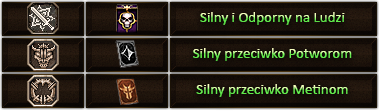
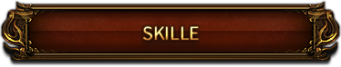
Od początku przyświeca nam idea zachowania klasycznego serwera z udogodnieniami.
Nie dodajemy żadnych wymyślnych ulepszeń ani dodatkowych bonusów do umiejętności.
Wierzymy, że prawdziwa siła Metina tkwi w jego prostocie i klimacie, który został wypracowany przez lata istnienia gry.
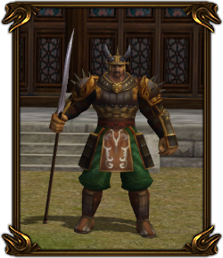
Umiejętności wybieramy Questem na 5 poziomie postaci.
W momencie kiedy uzyskamy 17 pkt rozdanych przy danej umiejętności mamy szansę na awans umiejętności na poziom m1.
Dalej umiejętności rozwijamy przy pomocy Ksiąg Umiejętności, a następnie przy pomocy Kamienia Duchowego.
Poniżej tabela z dokładnym opisem rozwoju umiejętności:
| Przedmiot | Poziom | Ilość | Szansa | Szansa z Radą | Czas | Egzo |
|---|---|---|---|---|---|---|
 |
M1-G1 | 55 | 40% | 100% | 24 godziny | Tak |
|
G1-P | 10 | 25% | Nie działa | 24 godziny | Tak |
| Przedmiot | Pochodzenie |
|---|---|
| Księgi umiejętności |
Kamienie Metin |
| Kamienie duchowe |
Kamienie Metin, Bossy Mapowe |


 Książki Pasywne Książki Pasywne |
 Skrzynia Mocy z Kamieni Metin
Skrzynia Mocy z Kamieni Metin |
| Rada Pustelnika |
Bossy Mapowe oraz Dungeony |
| Zwój Egzorcyzmu |
Kamienie Metin |
W polimorfii zaszły pewne zmiany względem oryginału, przedstawiamy je poniżej:
| Przedmiot | Poziom | Ilość | Szansa | Szansa z Radą | Egzo |
|---|---|---|---|---|---|
Księga Polimorfii |
0-20 | 20 | 50% | 100% | Tak |
Zaaw. Księga Polimorfii |
M1-G1 | 55 | 50% | 100% | Tak |
Mistrz. Księga Polimorfii |
G1-P | 165 | 50% | 100% | Tak |
Uwaga: Efekt skilli zanika po teleportacji na polimorfii.
Polimorfia została przebudowana zgodnie z Waszymi głosami w ankietach.
Dodaliśmy obrażenia, które rosną wraz z progresją umiejętności.
Podobnie działa czas trwania – na poziomie P wynosi on aż 35 minut.
| POZIOM | Obrażenia zwiększone o: | Czas trwania: |
|---|---|---|
| 0 | 0% | 1 minut |
| M1 | 140% | 10 minut |
| G1 | 175% | 20 minut |
| P | 300% | 35 minut |
Uwaga: Przeskoki są także pomiędzy poziomami.
Każdy poziom nadaje dodatkową wartość bonusu.
Rozwój umiejętności Dowodzenie pozwoli nam na nadanie dodatkowych bonusów dla członków naszej grupy.
| Przedmiot | Poziom | Ilość | Szansa | Szansa z Radą | Egzo |
|---|---|---|---|---|---|
 Sun-Zi |
0-20 | 20 | 50% | 100% | Tak |
Wu-Zi |
M1-G1 | 55 | 50% | 100% | Tak |
 Wei-Liao-Zi |
G1-P | 165 | 50% | 100% | Tak |
W Dowodzeniu wprowadziliśmy lekkie modyfikacje. Poziom P został wzmocniony tak, by stanowił satysfakcjonujący przeskok – adekwatny do wysiłku włożonego w jego rozwój.
| POZIOM | Wartość Ataku | Szybkość Ataku | Max PŻ | Czas trwania |
Regen PŻ |
Obrona |
|---|---|---|---|---|---|---|
| M1 | +58 | +3 | +944 | brak | brak | brak |
| G1 | +89 | +4 | +1516 | +41 | brak | brak |
| P | +130 | +6 | +2285 | +60 | +774% | +42% |
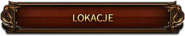
Na serwerze dostępnych jest wiele lokacji. Poniżej lista przykładowych map.
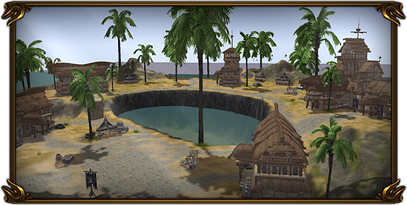
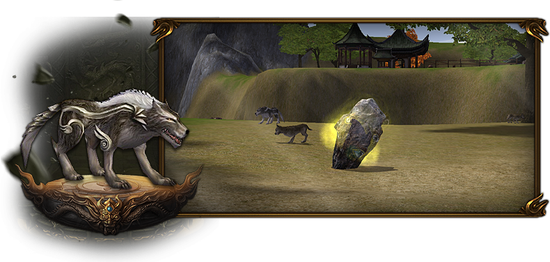
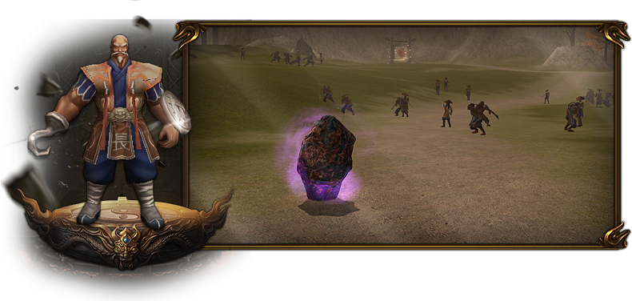
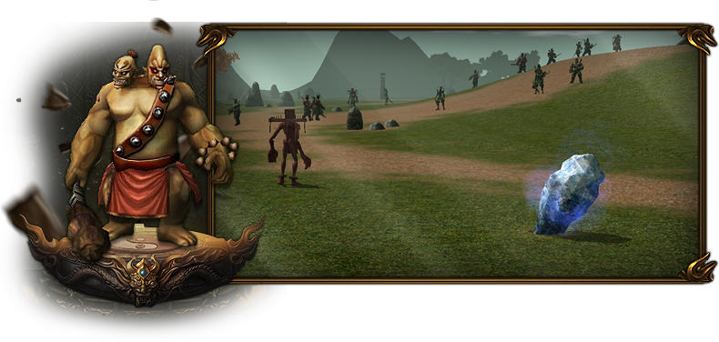
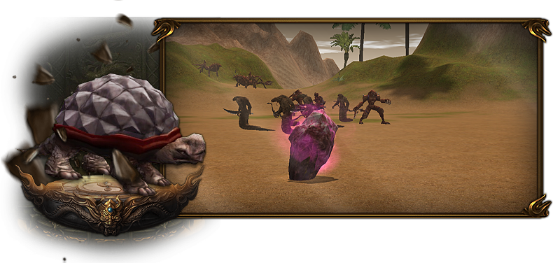
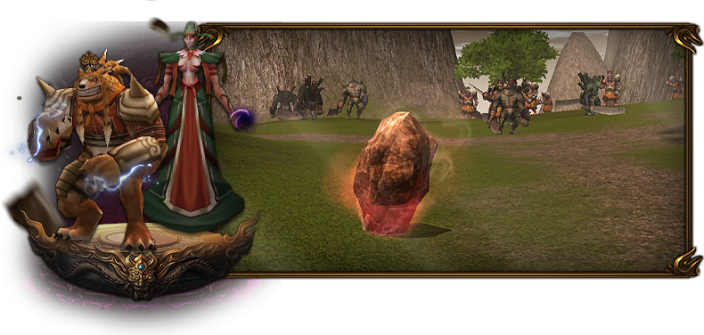
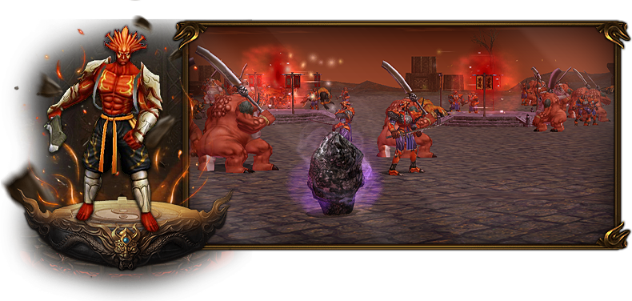
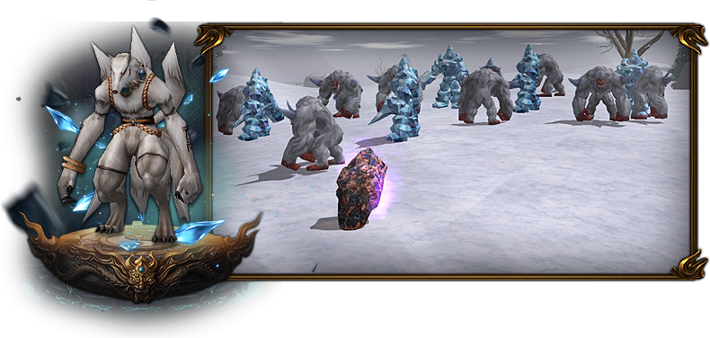
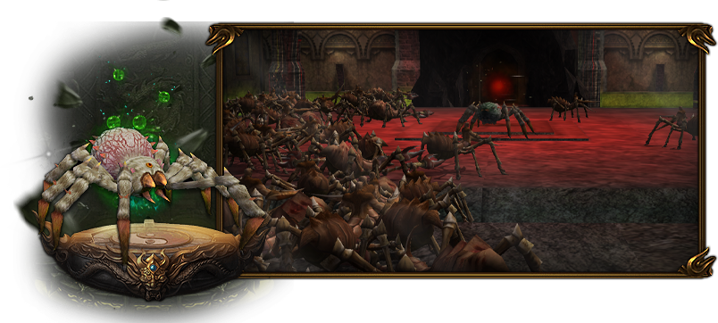
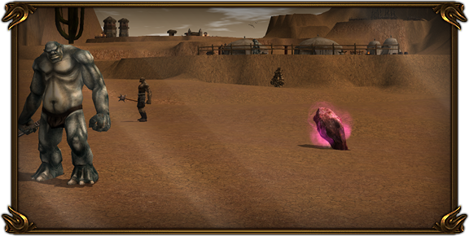
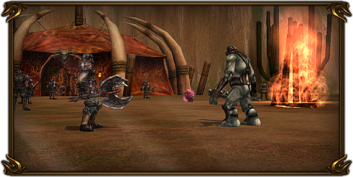
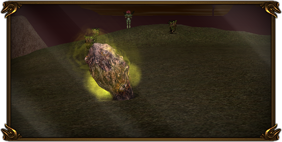
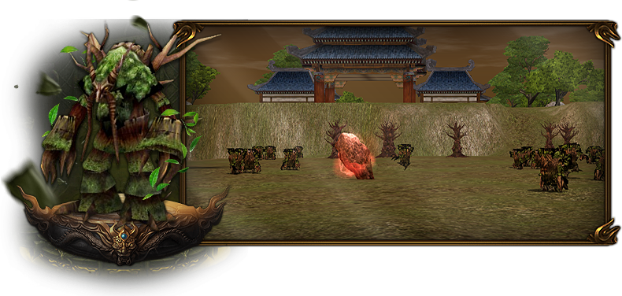
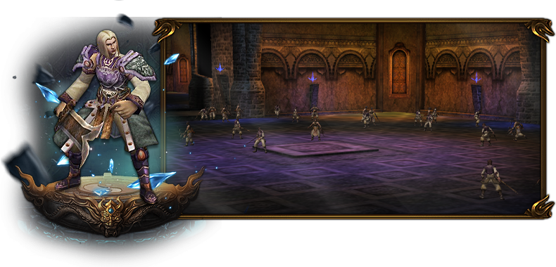
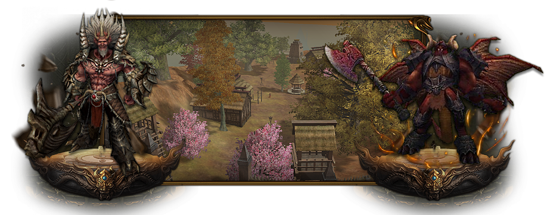
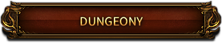
| Przepustka | Pochodzenie |
|---|---|
 Pieczęć Orków Pieczęć Orków |
Wódz Orków Ezot. Reinkar. Przywódca Kamienie Metin (40-50) Kamienie MetinBardzo mała szansa na drop przedmiotu z Metinów. |
 Demoniczny Klucz Demoniczny Klucz |
Dziewięć Ogonów Mroźny Tropiciel (mini-boss) Płomienny Rozbijacz (mini-boss) Strażnik Obozu (mini-boss) Kamienie Metin (70-80) Kamienie MetinBardzo mała szansa na drop przedmiotu z Metinów. |
 Pajęczy Klucz Pajęczy Klucz |
Królowa Pająków Elit. Królowa Pająków Pustynny Żółw Kamienie Metin (55-65) Kamienie MetinBardzo mała szansa na drop przedmiotu z Metinów. |
 Zasuszona Głowa Zasuszona Głowa |
Umarły Rozpruwacz Kamienny Egzekutor (mini-boss) Kamienie Metin (AV1) Kamienie MetinBardzo mała szansa na drop przedmiotu z Metinów. |
 Kręty Klucz Kręty Klucz |
Generał Yonghan Kamienie Metin (AV2) Kamienie MetinBardzo mała szansa na drop przedmiotu z Metinów. |
 Ognista Pieczęć Ognista Pieczęć |
Zjawa Żółtego Tygrysa Elit. Zjawa Żółtego Tygrysa Ognisty Król Elit. Ognisty Król |
 Kompas Hydry Kompas Hydry |
Polifem Rakszas |
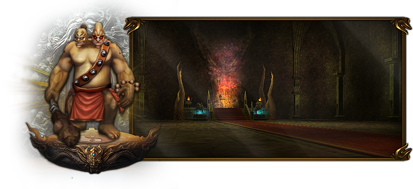
Pieczęć Orków x1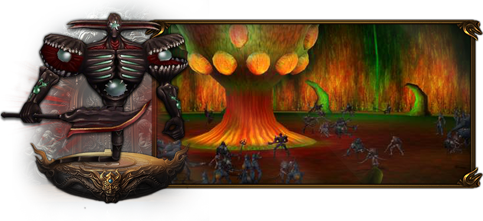

 Demoniczny Klucz x1
Demoniczny Klucz x1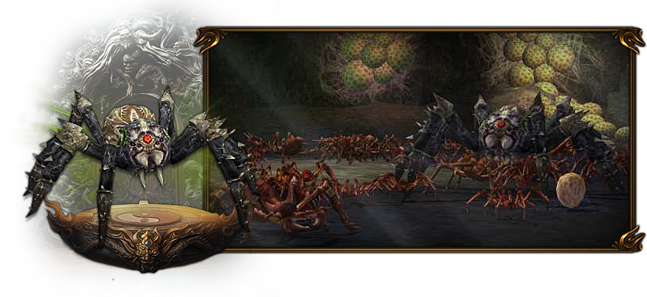
 Pajęczy Klucz x1
Pajęczy Klucz x1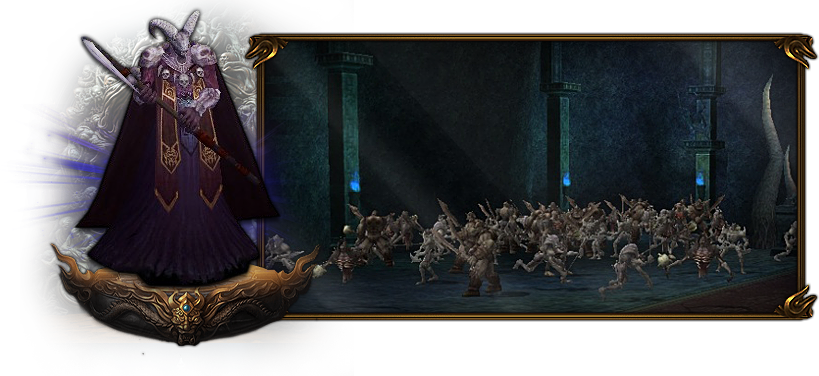

 Zasuszona Głowa x1
Zasuszona Głowa x1

 Kręty Klucz x1 — na postać
Kręty Klucz x1 — na postać
 Ognista Pieczęć — 1x na postać
Kompas Hydry — 1x na postać
Ognista Pieczęć — 1x na postać
Kompas Hydry — 1x na postaćNa Monastyr2 wprowadziliśmy system legendarnych bossów, które stanowią jeden z głównych filarów rywalizacji pomiędzy graczami i gildiami. Dostępne są trzy legendy, z czego jedna występuje w formie mini-legendy. Każda z nich została zaprojektowana tak, aby stanowić realne wyzwanie, a jednocześnie nagradzać graczy unikatowymi przedmiotami.
Kliknij aby przenieść się do odpowiedniej sekcji.
Na legendy będzie działać zarówno bonus silny przeciwko potworom, jak i silny przeciwko ludziom. To rozwiązanie ma na celu wzmocnienie elementu rywalizacji grupowej oraz nadanie legendom szczególnej rangi – tak żeby przedmioty z nich były jeszcze bardziej unikalne.
Pierwsi gracze, którzy osiągną maksymalny poziom, otrzymają unikatowe
Zbroje Hwang
(4 sztuki – po jednej dla każdej klasy).
Na stałe, nigdy więcej nie do zdobycia.
Gracz, który jako pierwszy spełni wszystkie poniższe warunki, otrzyma
nagrodę finansową w wysokości 5000 PLN wypłaconą przelewem
na konto bankowe.
Małżeństwo zawrzecie u Starszej Pani.
Umożliwi to wam teleport między swoimi postaciami za pomocą Pierścionka Zaręczynowego.
| 25 Poziom postaci |
| Pierścionek Zaręczynowy (w ekwipunku obu postaci) |
| Strój weselny (założony na każdej postaci) |
Stroje weselne można nabyć za opłatą u Domokrążcy, natomiast Pierścienie Zaręczynowe zdobywa się z misji.
Osełki możemy wytworzyć u Jae-Seon Kim. System dzieli się na dwa warianty: osełki do broni na 55 poziom oraz osełki do broni na 75 poziom. Kliknij wybraną osełkę, aby wyświetlić przypisany do niej crafting.
Rezultat
Osełka dzięki której możesz dodać bonus silny przeciwko potworom do broni 75 poziom!
Materiały craftingu
Przetopy możemy wytwarzać u Jae-Seon Kim.

Możesz je przymocować do odpowiadających akcesoriów.
Rudy z Górnictwa są także wykorzystywane do pasów. Z samych rud możemy wytworzyć Esencję Przetopu, dzięki której ulepszymy pasy na wyższy poziom.
500.000
Wymagana ruda
Kamienie Duszy +5 wytwarzamy u Jae-Seon Kim
2.000.000 Yang
Wymagane materiały
Poniższe przedmioty wytwarzamy u Uriela. Wybierz interesujący Cię przedmiot z listy, aby sprawdzić wymagane materiały oraz rezultat craftingu.
Wymagane materiały
Najeżdżając na znak zapytania, zobaczysz dodatkowe informacje o zasadach wymiany.

Kamienie Duszy:
KD +0 => 1 Peleryna za sztukę
KD +1 => 2 Peleryny za sztukę
KD +2 => 3 Peleryny za sztukę
KD +3 => 3 Peleryny za sztukę
Księgi / Kwiaty:
Wg. mnożnika w tabeli (1-3)
Ulepszacze:
Losowe 20 szt. = 1 Pozwolenie na ulepszanie
Pasy dostępne są w dwóch podstawowych wariantach: Lnianym oraz Skórzanym.
Każdy z nich możemy zdobyć poprzez crafting lub po otworzeniu szkatułki odpowiedniego bossa.
Poniżej możecie sprawdzić podstawowe informacje o obu pasach, a po rozwinięciu zobaczycie dokładny crafting
wraz z wymaganymi przedmiotami, kosztem wytworzenia oraz szansą powodzenia.

Silny przeciwko Potworom +7%
Wartość Ataku +30
[Wyposażalny]
Wojownik, Ninja, Sura, Szaman
| Przedmiot | Nazwa | Ilość |
|---|---|---|
|
Szkatułka Wodza Orków | 60 |
|
Szkat. Królowej Pająków | 30 |
|
Szkat. Pustynnego Żółwia | 30 |
|
Złota Przędza | 5 |
|
Zwój Egzorcyzmu | 25 |
💰 Koszt wytworzenia: 5 000 000 Yang
Szansa na pomyślne wytworzenie: 100%

Silny przeciwko Ludziom +7%
Wartość Ataku +30
[Wyposażalny]
Wojownik, Ninja, Sura, Szaman
| Przedmiot | Nazwa | Ilość |
|---|---|---|
|
Szkat. Dziewięciu Ogonów | 30 |
|
Szkat. Żółtego Tygrysa | 30 |
|
Szkat. Ognistego Króla | 30 |
|
Złota Przędza | 5 |
|
Rada Pustelnika | 25 |
💰 Koszt wytworzenia: 5 000 000 Yang
Szansa na pomyślne wytworzenie: 100%
Pasy będziemy mogli przerobić na dalszy poziom.
Z każdym ulepszeniem wymagany poziom będzie rósł aż do 105lv.
Żeby przerobić pas dalej będziemy potrzebowali rudy z Górnictwa.
Progresje razem z bonusami przedstawiamy poniżej:
Silny przeciwko Ludziom +7%
Wartość Ataku +30
[Wyposażalny]
Wojownik, Ninja, Sura, Szaman

Silny przeciwko Ludziom +18%
Obrażenie Umiejętności +7%
Max PŻ +1500
[Wyposażalny]
Wojownik, Ninja, Sura, Szaman
Silny przeciwko Potworom +7%
Wartość Ataku +30
[Wyposażalny]
Wojownik, Ninja, Sura, Szaman

Silny przeciwko Potworom +20%
Wartość Ataku +100
Max PŻ +1500
[Wyposażalny]
Wojownik, Ninja, Sura, Szaman
Większość misji została usunięta
Misje które pozostały to:
Badania (Biolog / Seon-Pyeong)
Misje Fabularne - gwarantują stałe bonusy
Poniżej możesz kliknąć i wybrać, czy chcesz zobaczyć badania biologa, czy sekcję misji fabularnych.
| 30 | Badania Biologa 1 | Czas badania: 30 minut |
 Ząb Orka ×10 Ząb Orka ×10
 Kamień Duchowy Jinno Kamień Duchowy Jinno
|
Szybkość Ruchu: +10% |
| 40 | Badania Biologa 2 | Czas badania: 1 godzina |
 Księga Klątw ×15 Księga Klątw ×15
 Świątynny Kamień Duchowy Świątynny Kamień Duchowy
|
Szybkość Ataku: +5% |
| 50 | Badania Biologa 3 | Czas badania: 3 godziny |
 Pamiątka po Demonie ×15 Pamiątka po Demonie ×15
 Kamień Duchowy Sagyi Kamień Duchowy Sagyi
|
Obrona: +60 |
| 60 | Badania Biologa 4 | Czas badania: 6 godzin |
 Matowy Lód ×20 Matowy Lód ×20
 Kamień Duchowy Aurtumryu Kamień Duchowy Aurtumryu
|
Wart. Ataku +50 Mag. Atak +50 |
| 70 | Badania Biologa 5 | Czas badania: 12 godzin |
 Konar Zelkova ×25 Konar Zelkova ×25
 Kamień Duchowy Gyimok Kamień Duchowy Gyimok
|
Odporność na ataki fizyczne: +10% |
| 80 | Badania Biologa 6 | Czas badania: 24 godziny |
 Certyfikat Tugyisa ×30 Certyfikat Tugyisa ×30
 Kamień Duchowy Tugyi Kamień Duchowy Tugyi
|
Atak fizyczny: +10% |
| 85 | Badania Biologa 7 | Czas badania: 24 godziny |
 Czerw. Konar ×40 Czerw. Konar ×40
 Kamień Duchowy Lasu Kamień Duchowy Lasu
|
Odp. na klasy: +10% |
| 90 | Badania Biologa 8 | Czas badania: 24 godziny |
 Notatka Przywódcy ×50 Notatka Przywódcy ×50
 Kamień Duchowy Liderów Kamień Duchowy Liderów
|
Atak przeciwko klasom: +12% |
| 92 | Badanie Seona-Pyeonga | Czas badania: 24 godziny |
 Klejnot Zawiści ×10 Klejnot Zawiści ×10
|
Do wyboru
|
| 94 | Klejnoty Seona-Pyeonga | Czas badania: 24 godziny |
 Klejnot Mądrości ×20 Klejnot Mądrości ×20
 Kamień Duchowy Berana Kamień Duchowy Berana
|
Do wyboru
|
| 100 | Klejnoty Seona-Pyeonga | Czas badania: 24 godziny |
 Czerw. Kwarc. Piekieł ×30 Czerw. Kwarc. Piekieł ×30
|
Odp. na obr. umiejętności: +5% |

Poprawia jakość przedmiotów przeznaczonych do badań, co powoduje zwiększenie szansy na ich przyjęcie.
W grze występuje Eliksir Poszukiwacza, który pozwala na skrócenie czasu oczekiwania oraz zwiększa szansę na pomyślne oddanie przedmiotu o 20%.
Poziom: 10
Poziom: 20
Poziom: 30
Poziom: 40
Poziom: 50
Poziom: 60
Poziom: 70
Poziom: 80
Poziom: 90
Poziom: 100
Poziom: 105
W tym miejscu zebraliśmy najważniejsze elementy wyposażenia PVE w jednym, czytelnym podglądzie, aby łatwiej było zobaczyć cały zestaw oraz powiązane z nim przedmioty. Sekcja zawiera także część interaktywną, więc możesz przełączać wybrane elementy i sprawdzać ich wygląd.
Szybkość Zaklęcia +28%
Szansa na odzyskanie PŻ 10%
Szansa na przeszywające Uderzenie 20%
[Wyposażalny]
Wojownik, Ninja, Sura, Szaman
Szybkość Ataku +15%
Silny przeciwko Potworom +12%
Szansa na cios krytyczny +7%
[Wyposażalny]
Wojownik, Ninja, Sura, Szaman
Silny przeciwko Potworom +12%
Max PŻ +1650
Szansa na cios krytyczny +7%
[Wyposażalny]
Wojownik, Ninja, Sura, Szaman

Obrona 163
Szybkość Ruchu -12%
Odporność na Obrażenia Umiejętności 12%
Silny przeciwko Metinom +12%
[Wyposażalny]
Wojownik, Ninja, Sura, Szaman
W tej sekcji pokazujemy najważniejsze części zestawu PVP, żeby w jednym miejscu łatwo porównać jego kluczowe elementy i ich przeznaczenie. Znajduje się tu również część interaktywna, dzięki której możesz przełączać wybrane przedmioty i sprawdzać ich wygląd.

Obrona 173
Szybkość Ruchu -12%
Obrażenia Umiejętności 8%
Odporność na Ludzi 10%
[Przeznaczona dla]
Wojownik, Ninja, Sura, Szaman

Max PŻ +2600
Silny przeciwko Ludziom +18%
Szansa na cios krytyczny +7%
[Przeznaczona dla]
Wojownik, Ninja, Sura, Szaman

Szybkość Ataku +10%
Szansa na cios krytyczny +15%
Silny przeciwko Ludziom +18%
[Przeznaczona dla]
Wojownik, Ninja, Sura, Szaman

Szybkość Zaklęcia +30%
Szansa na przeszywające Uderzenie 25%
Odporność na Ludzi 8%
[Przeznaczona dla]
Wojownik, Ninja, Sura, Szaman

Obrona 10
Szybkość Ruchu 25%
Szansa na blok ciosów 20%
Odporność na Ludzi 8%
[Przeznaczona dla]
Wojownik, Ninja, Sura, Szaman

Obrona 99
Szansa na blok ciosów 10%
Max PŻ +2000
[Przeznaczona dla]
Wojownik
Na koniec prezentacji chcielibyśmy poinformować, że będzie ona na bieżąco aktualizowana o kolejne segmenty.
Obecnie wstrzymaliśmy się z ich dodawaniem z jednego powodu:
chcemy poznać Waszą opinię.
Zaraz po rozpoczęciu beta testów serwera stworzymy specjalny wątek z ankietami na Discordzie, gdzie będziecie mogli swobodnie wyrazić swoje zdanie na temat poszczególnych systemów i ich potencjalnych zmian.
Zachęcamy, abyście byli aktywni i otwarci w komunikacji. Naszym celem jest stworzenie środowiska, w którym każdy ma realną szansę zostać wysłuchany. To ambitne zadanie, ale traktujemy je jako priorytet.
Wierzymy, że dzięki takiemu podejściu będziemy mogli budować stabilny serwer tworzony wspólnie z graczami, a jego rozwój będzie miał długofalowy charakter.
W sekcji Aktualizacje pokazujemy zmiany, które powstały dzięki wspólnym ankietom i opiniom społeczności Monastyr2. Wasz głos miał realny wpływ na kierunek rozwoju serwera, dlatego poniżej znajdziecie rozwiązania, które zostały już wprowadzone do rozgrywki.


Zamiast statycznej listy pytań możesz od razu zapytać asystenta serwera. Odpowiada wyłącznie z lokalnej bazy wiedzy.
Asystent działa obecnie w wersji alfa. Informacje w bazie wiedzy będą aktualizowane na bieżąco wraz z rozwojem prezentacji i serwera.
Krótkie odpowiedzi, bez zgadywania i bez dopowiadania szczegółów.
Na koniec chcemy podkreślić jedną rzecz – Monastyr2 to klasyczny przebieg rozgrywki. Nie będzie tutaj miliona dziwnych systemów, które sprawią, że człowiek dostaje oczopląsu i po godzinie ma dość. U nas ma być po prostu przyjemnie i wynagradzająco – coś do czego większość z nas już przywykła.
Ale też nie ma co się oszukiwać, tworząc klasyka – nie możemy cofnąć się całkiem do 2008 roku. Minęło prawie 20 lat, a gracze przyzwyczaili się do pewnych udogodnień. Dlatego to, co było potrzebne i co stało się dziś częścią Metina, staraliśmy się zaaplikować u nas. Większość graczy przyzwyczaiła się już do systemów takich jak alchemia – i jest to pewnego rodzaju niezbędnik w dzisiejszym Metinie.
Wiemy, że część osób może krytykować nas za wprowadzone zmiany. Nasze doświadczenia z Metina pozwoliły nam wybrać rozwiązania, które naszym zdaniem najlepiej sprawdzają się w praktyce i dają graczom frajdę – ale to właśnie Wasze opinie i feedback będą dalej kształtować kierunek serwera. Staraliśmy się zachować klimat klasyka, ale jednocześnie przygotować dla Was serwer medium/hard, gdzie początek nie będzie przesadnie wymagający, a po przejściu tego „luźniejszego” etapu dalej będzie czekała na Was masa rzeczy, w które możecie inwestować swój czas i w dalszym ciągu cieszyć się rozgrywką.
Podsumowując – stawiamy na klimat, prostotę i frajdę z gry. To nie jest serwer, który ma przytłaczać – tylko taki, na którym możesz spokojnie usiąść i pograć w świeższą, dostosowaną do dzisiejszych realiów wersję.
Do zobaczenia w grze –
Ekipa Monastyr2